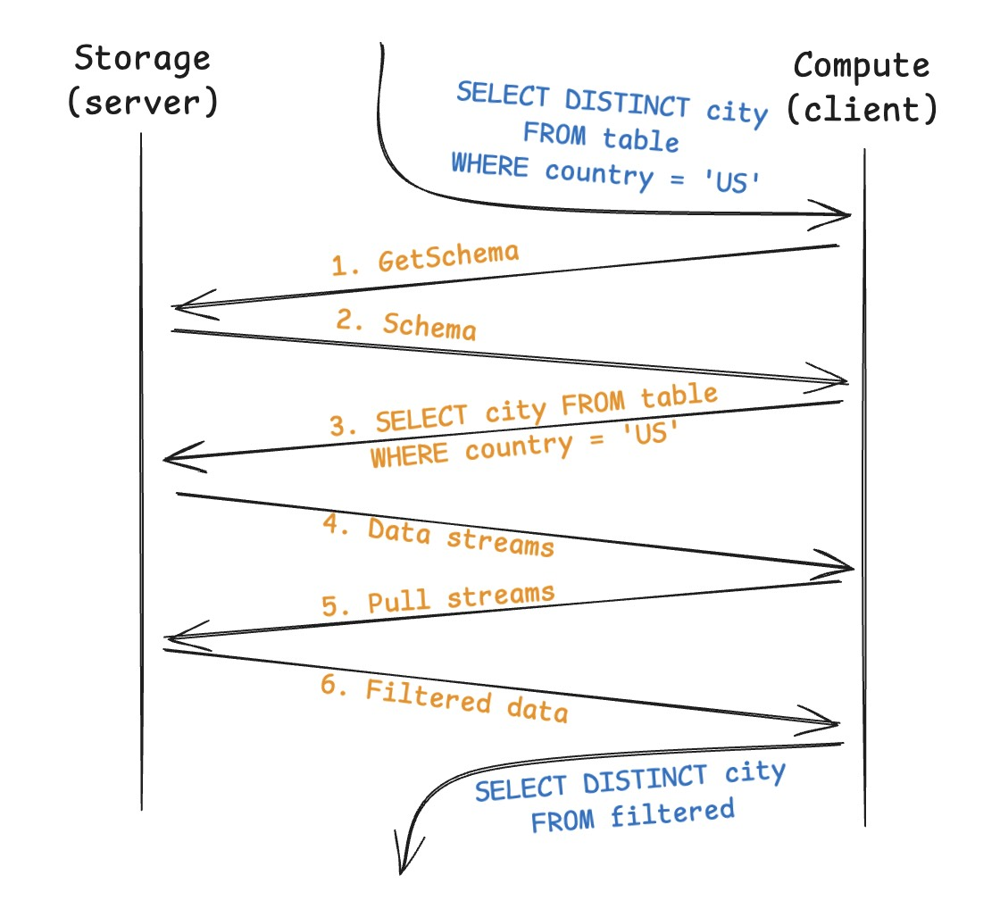

TL;DR
S3-Select can filter S3 data before sending it back to you, significantly saving network bandwidth and time. Unfortunately, AWS killed this feature in 2024.
Good news: you can build your own S3-Select with all open-source tools and open standards! This blog post shows you how to do it in 400 lines of Rust1 using the FDAP stack2.
1 Without blank lines and comments.
2 FDAP: Apache Arrow Flight, Apache DataFusion, Apache Arrow, Apache Parquet
Complete code is available in this repository. Looking for a more complete solution? Check out LiquidCache, a open-source/open-standard, push-down enabled storage system built on the same principles.
Architecture
As we can’t change S3, we assume that the data is stored in our own storage system (often as a cache to S3).
Our architecture consists of three main components: a storage server, a compute client, and the Arrow Flight protocol connecting them.
Compute
The compute (client) is a full-fledged DataFusion node that automatically pushes down filter expressions to the storage server. Unlike S3-Select which requires manual SQL filter crafting, our system automatically decides what can be evaluated at the storage layer, while handling complex operations (joins, aggregations) in the compute node.
Storage
The storage (server) stores Parquet3 files and evaluates the filters pushed down from the compute node. We leverage DataFusion’s highly optimized query engine for filter evaluation, which includes efficient Parquet reading with filter pushdown, parallel filter evaluation across multiple threads, and streaming filtered results back to the compute node.
3 Parquet is the industry standard columnar storage format. CSV/JSON/etc. are also easily supported, but you should really consider using a real format like Parquet.
Communication
Communication between compute and storage happens via the Arrow Flight protocol – a high-performance, open-standard protocol for efficient data exchange. Unlike S3-Select which transmits data in CSV format, we keep data in columnar format throughout the entire pipeline. This means the compute node can directly operate on the data without heavy deserialization, and any system that speaks Arrow Flight can read from our storage.
Life of a query
Let’s walk through how a query flows through our system:

Schema Resolution: When a user submits a query, the compute node first resolves the table schema from the storage node via Arrow Flight.
Query Planning: The compute node generates a query plan and decides which parts should be evaluated locally versus pushed down to the storage node.
Filter Pushdown: The compute node sends filter predicates to the storage node for evaluation close to the data.
Filter Evaluation: The storage node evaluates these filters and streams only the matching data back to the compute node.
Final Processing: The compute node handles the computation-heavy parts (aggregations, joins, etc.) and returns the final result to the user.
Note that only filters are pushed down to the storage node, computation-heavy operations happen at the compute layer. This prevents overloading the storage node’s processing capabilities while reducing network traffic.
Implementing the Storage Server
Now that we understand the architecture, let’s build the storage server. Surprisingly, we can implement it in less than 100 lines of code thanks to DataFusion!
Our storage server is defined as:
struct StorageServer {
execution_plans: Mutex<HashMap<u64, Arc<dyn ExecutionPlan>>>,
next_id: atomic::AtomicU64,
ctx: SessionContext,
}Let’s break down what each field does:
execution_plans: Maps query IDs to their execution plansnext_id: Generates unique query IDs4ctx: The DataFusion session context (we use a single context for all queries for simplicity)
4 In production, you should use a proper unique ID generator like uuid.
The StorageServer implements the FlightSqlService trait with three key methods:
#[tonic::async_trait]
impl FlightSqlService for StorageServer {
type FlightService = StorageServer;
async fn get_flight_info_schemas(
&self,
query: CommandGetDbSchemas,
_request: Request<FlightDescriptor>,
) -> Result<Response<FlightInfo>, Status> {
todo!()
}
async fn get_flight_info_statement(
&self,
cmd: CommandStatementQuery,
_request: Request<FlightDescriptor>,
) -> Result<Response<FlightInfo>, Status> {
todo!()
}
async fn do_get_fallback(
&self,
_request: Request<Ticket>,
message: Any,
) -> Result<Response<<Self as FlightService>::DoGetStream>, Status> {
todo!()
}
}Let’s implement each method one by one.
1. Schema Resolution
First, we need to implement get_flight_info_schemas to handle schema retrieval:
async fn get_flight_info_schemas(
&self,
query: CommandGetDbSchemas,
_request: Request<FlightDescriptor>,
) -> Result<Response<FlightInfo>, Status> {
let table_url = query.catalog.unwrap();
let table_name = query.db_schema_filter_pattern.unwrap();
_ = self
.ctx
.register_parquet(&table_name, table_url, Default::default())
.await;
let schema = self.ctx.table_provider(&table_name).await.unwrap().schema();
let info = FlightInfo::new().try_with_schema(&schema).unwrap();
Ok(Response::new(info))
}This method:
- Registers the Parquet file with DataFusion
- Gets the schema from the registered table
- Returns the schema as a FlightInfo response
2. Query Planning
Next, we implement get_flight_info_statement to handle query planning:
async fn get_flight_info_statement(
&self,
cmd: CommandStatementQuery,
_request: Request<FlightDescriptor>,
) -> Result<Response<FlightInfo>, Status> {
let query = cmd.query.as_str();
let (state, logical_plan) = self.ctx.sql(query).await.unwrap().into_parts();
let plan = state.optimize(&logical_plan).unwrap();
let physical_plan = state.create_physical_plan(&plan).await.unwrap();
let partition_count = physical_plan.output_partitioning().partition_count();
let schema = physical_plan.schema();
let id = self.next_id.fetch_add(1, atomic::Ordering::Relaxed);
self.execution_plans
.lock()
.unwrap()
.insert(id, physical_plan);
let mut info = FlightInfo::new().try_with_schema(&schema).unwrap();
for partition in 0..partition_count {
let fetch = FetchResults {
handle: id,
partition: partition as u32,
};
let buf = fetch.as_any().encode_to_vec().into();
let ticket = Ticket { ticket: buf };
let endpoint = FlightEndpoint::new().with_ticket(ticket.clone());
info = info.with_endpoint(endpoint);
}
Ok(Response::new(info))
}This method:
- Parses the SQL into a logical plan
- Optimizes the logical plan and converts it to a physical plan
- Returns partition info and query ID to the compute node
3. Data Streaming
Finally, we implement do_get_fallback to handle data streaming:
async fn do_get_fallback(
&self,
_request: Request<Ticket>,
message: Any,
) -> Result<Response<<Self as FlightService>::DoGetStream>, Status> {
let fetch_results: FetchResults = message.unpack().unwrap().unwrap();
let plan_lock = self.execution_plans.lock().unwrap();
let physical_plan = plan_lock.get(&fetch_results.handle).unwrap().clone();
let stream = physical_plan
.execute(fetch_results.partition as usize, self.ctx.task_ctx())
.unwrap()
.map_err(|e| arrow_flight::error::FlightError::ExternalError(Box::new(e)));
let encoder = FlightDataEncoderBuilder::new().build(stream);
let response_stream =
encoder.map(|result| result.map_err(|e| Status::internal(e.to_string())));
Ok(Response::new(Box::pin(response_stream)))
}This method:
- Retrieves the physical plan for that query
- Executes the plan on the specified partition
- Returns the stream to the compute node
That’s it for the storage server! Just these three methods are enough to implement the core functionality5.
5 Of course, a production server needs way more: error handling, logging, authentication, etc. But these concerns are orthogonal to our core implementation.
Implementing the Compute Node
The compute node has more work to do, as it needs to:
- Communicate with the storage server to get data
- Decide which parts of the query to send to storage
- Process the filtered data to produce the final result
We’ll implement this through two main components:
FlightTable: Decides what gets pushed down to storageFlightExec: Handles the data streaming from storage
Here’s how they fit together in the query plan:
6 Strictly speaking, when filter pushdown is enabled, the FilterExec is merged into ParquetExec in the storage server.
Implementing FlightTable
Let’s start with FlightTable, which implements DataFusion’s TableProvider trait:
pub struct FlightTable {
channel: Channel,
server: String,
table_name: TableReference,
output_schema: SchemaRef,
}
#[async_trait]
impl TableProvider for FlightTable {
async fn scan(
&self,
_state: &dyn Session,
projection: Option<&Vec<usize>>,
filters: &[Expr],
limit: Option<usize>,
) -> Result<Arc<dyn ExecutionPlan>> {
todo!()
}
fn supports_filters_pushdown(
&self,
filters: &[&Expr],
) -> Result<Vec<TableProviderFilterPushDown>> {
todo!()
}
// ... other trait methods
}The FlightTable has two important methods:
scan: Creates aFlightExecnode that pulls data from storagesupports_filters_pushdown: Tells DataFusion which filters can be pushed down
Let’s implement the scan method first:
async fn scan(
&self,
_state: &dyn Session,
projection: Option<&Vec<usize>>,
filters: &[Expr],
limit: Option<usize>,
) -> Result<Arc<dyn ExecutionPlan>> {
let unparsed_sql = {
// we don't care about actual source for the purpose of unparsing the sql.
let empty_table_provider = empty::EmptyTable::new(self.schema().clone());
let table_source = Arc::new(DefaultTableSource::new(Arc::new(empty_table_provider)));
let logical_plan = TableScan {
table_name: self.table_name.clone(),
source: table_source,
projection: projection.map(|p| p.to_vec()),
filters: filters.to_vec(),
fetch: limit,
projected_schema: Arc::new(self.schema().as_ref().clone().to_dfschema().unwrap()),
};
let unparser = Unparser::new(&PostgreSqlDialect {});
let unparsed_sql = unparser
.plan_to_sql(&LogicalPlan::TableScan(logical_plan))
.unwrap();
unparsed_sql.to_string()
};
println!("SQL send to cache: \n{}", unparsed_sql);
let mut client = FlightSqlServiceClient::new(self.channel.clone());
let info = client.execute(unparsed_sql, None).await.unwrap();
Ok(Arc::new(FlightExec::try_new(
self.schema.clone(),
info,
projection,
&self.server,
)?))
}The magic happens in the unparsing step. We leverage DataFusion’s query planner to:
- Create a logical plan containing the filters, projections, and limits
- Unparse this plan back to SQL using DataFusion’s unparser7
- Send this SQL to the storage server for evaluation
- Create a FlightExec node that will stream data from storage
Next, let’s implement the filter pushdown support:
fn supports_filters_pushdown(
&self,
filters: &[&Expr],
) -> Result<Vec<TableProviderFilterPushDown>> {
let filter_push_down: Vec<TableProviderFilterPushDown> = filters
.iter()
.map(
|f| match Unparser::new(&PostgreSqlDialect {}).expr_to_sql(f) {
Ok(_) => TableProviderFilterPushDown::Exact,
Err(_) => TableProviderFilterPushDown::Unsupported,
},
)
.collect();
Ok(filter_push_down)
}Our rule is simple but effective: if a filter can be unparsed to SQL, we push it down to storage.
Implementing FlightExec
Now let’s implement FlightExec, which is responsible for streaming data from storage:
pub struct FlightExec {
server: String,
partitions: Arc<[FlightPartition]>,
plan_properties: PlanProperties,
}
impl ExecutionPlan for FlightExec {
fn execute(
&self,
partition: usize,
_context: Arc<TaskContext>,
) -> Result<SendableRecordBatchStream> {
let future_stream = flight_stream(self.partitions[partition].clone(), self.schema());
Ok(Box::pin(FlightStream {
state: FlightStreamState::Init,
future_stream: Some(Box::pin(future_stream)),
schema: self.schema(),
}))
}
// ... other trait methods
}FlightExec is mainly a wrapper around FlightStream, which handles the async streaming of data from storage:
struct FlightStream {
state: FlightStreamState,
future_stream: Option<BoxFuture<'static, Result<SendableRecordBatchStream>>>,
schema: SchemaRef,
}
impl Stream for FlightStream {
type Item = Result<RecordBatch>;
fn poll_next(mut self: Pin<&mut Self>, cx: &mut Context<'_>) -> Poll<Option<Self::Item>> {
let result: Poll<Option<Result<RecordBatch>>> = loop {
match &mut self.state {
FlightStreamState::Init => {
self.state = FlightStreamState::GetStream(self.future_stream.take().unwrap());
continue;
}
FlightStreamState::GetStream(fut) => {
let stream = ready!(fut.as_mut().poll(cx)).unwrap();
self.state = FlightStreamState::Processing(stream);
continue;
}
FlightStreamState::Processing(stream) => {
let result = stream.as_mut().poll_next(cx);
break result;
}
}
};
match result {
Poll::Ready(Some(Ok(batch))) => Poll::Ready(Some(Ok(batch))),
Poll::Ready(None) => Poll::Ready(None),
Poll::Ready(Some(Err(e))) => {
panic!("Error reading flight stream: {}", e);
}
_ => Poll::Pending,
}
}
}The implementation is a bit complex due to Rust’s lack of native async iterators, requiring us to implement a state machine manually. However, the core concept is straightforward – it pulls data from storage and returns it as a stream.
Putting It All Together
Now let’s assemble our components into a working system!
Server Binary
The server binary is simple – it just starts a Flight service with our StorageServer:
#[tokio::main]
async fn main() -> Result<(), Box<dyn std::error::Error>> {
let addr = "127.0.0.1:50051".parse()?;
Server::builder()
.add_service(FlightServiceServer::new(StorageServer::default()))
.serve(addr)
.await?;
Ok(())
}Client Binary
The client binary configures DataFusion, registers our FlightTable, and runs the query:
#[tokio::main]
async fn main() -> Result<(), Box<dyn std::error::Error>> {
let mut session_config = SessionConfig::from_env()?;
session_config
.options_mut()
.execution
.parquet
.pushdown_filters = true;
let ctx = Arc::new(SessionContext::new_with_config(session_config));
let cache_server = "http://localhost:50051";
let table_name = "aws-edge-locations";
let table_url = "./aws-edge-locations.parquet";
let sql = format!(
"SELECT DISTINCT \"city\" FROM \"{table_name}\" WHERE \"country\" = 'United States'"
);
let table = FlightTable::create(cache_server, table_name, table_url).await;
ctx.register_table(table_name, Arc::new(table))?;
ctx.sql(&sql).await?.show().await?;
Ok(())
}Running the System
To run our S3-Select alternative:
cargo run --bin server
cargo run --bin clientYou should see output like:
```bash
SQL to run:
-------
SELECT DISTINCT "city" FROM "aws-edge-locations" WHERE "country" = 'United States'
-------
SQL to pushdown:
-------
SELECT "aws-edge-locations"."city" FROM "aws-edge-locations" WHERE ("aws-edge-locations"."country" = 'United States')
-------
+----------------+
| city |
+----------------+
| Boston |
| Chicago |
| Portland |
| New York |
| Newark |
| Detroit |
...Notice that only the filter (WHERE "country" = 'United States') was pushed down to storage, while the aggregation (DISTINCT) was evaluated by the compute node. This is exactly what we wanted!
What’s Next: LiquidCache
Congratulations! You’ve built a working S3-Select alternative in just 400 lines of Rust. However, this blog post only scratches the surface of what’s possible with this architecture.
To take this concept further, I’m excited to announce LiquidCache – a modern, open-source, push-down enabled storage system built on the same principles. LiquidCache extends what we’ve built here (to 15k loc) with advanced features like:
- Advanced caching strategies
- Advanced filter evaluation techniques
- Enhanced reliability and error handling
- Performance optimizations
Check out our research paper for technical details and consider contributing to the project!
Conclusion
Building a functional S3-Select alternative is surprisingly simple once you leverage the right building blocks. The FDAP stack (Flight, DataFusion, Arrow, Parquet) provides powerful primitives that handle most of the heavy lifting for us.
The real challenge – and fun – lies in understanding what these components do and how to thread them together effectively. As demonstrated by the imports alone, we’re standing on the shoulders of giants:
use arrow::{
array::RecordBatch,
datatypes::{SchemaRef, ToByteSlice},
};
use arrow_flight::{
FlightClient, FlightEndpoint, FlightInfo, Ticket,
flight_service_client::FlightServiceClient,
sql::{CommandGetDbSchemas, client::FlightSqlServiceClient},
};
use datafusion::{
catalog::{Session, TableProvider},
common::{ToDFSchema, project_schema},
datasource::{DefaultTableSource, TableType, empty},
error::{DataFusionError, Result},
execution::{RecordBatchStream, SendableRecordBatchStream, TaskContext},
logical_expr::{LogicalPlan, TableProviderFilterPushDown, TableScan},
physical_expr::EquivalenceProperties,
physical_plan::{
DisplayAs, DisplayFormatType, ExecutionPlan, PlanProperties,
execution_plan::{Boundedness, EmissionType},
stream::RecordBatchStreamAdapter,
},
prelude::*,
sql::{
TableReference,
unparser::{Unparser, dialect::PostgreSqlDialect},
},
};
use futures::{Stream, TryStreamExt, future::BoxFuture};
use std::task::{Context, Poll, ready};
use std::{any::Any, pin::Pin, sync::Arc};
use tonic::{async_trait, transport::Channel};The power of open-source tools and open standards isn’t just a fallback — it’s a superior approach that liberates us from vendor lock-in and service discontinuations. We’ve demonstrated that not only can we rebuild essential services like S3-Select after their commercial versions are discontinued, but we can create more powerful8, customizable, and cost-effective alternatives.
8 Azure also has filter pushdown, but they don’t support Parquet files.